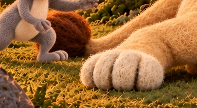
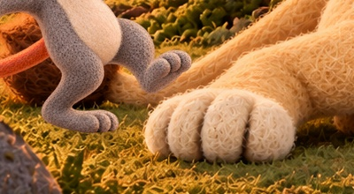
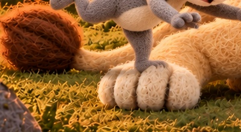
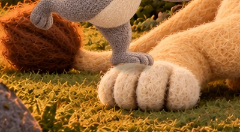

S05-L008-B01-I01_grounded_approach_r002_candidate.png
Selected source still



Approach: Milo remains left of the rear paw; no catch yet.
931524d8d9fe60d0eeb4415311254078337118f1a86ecfde781df35e820429f9S05-L008-B01-I02_key_first_joint_rear_paw_contact_r004_candidate.png
Selected source still



Contact-labeled selected still: raised mouse foot is left/above Leo’s paw edge, without a clear hooked overlap. The precise snag is not visible.
f0fc9cea1bfec97584e6e4b62919b0be8b6a6e71e636494bbf6c58d8c862efe6S05-L008-B01-I03_forward_pitch_r002_candidate.png
Selected source still



Pitch: planted foot now rests on top of Leo’s rear paw. This reads as stepping onto the paw; it does not retrospectively establish a snag.
7d2559b53235c113132a5fe922d8866994c42c337f52da664bdd0a6d4889426bS05-L008-B01-I04_local_trip_r002_candidate.png
Selected source still



Trip: foot remains on the paw while torso extends forward. The selected states do not identify the instant the advancing foot is arrested.
a7f5009ae8040b97239c5bed9a00544ef97e811eb75e7cd1970a038a896ab7e7